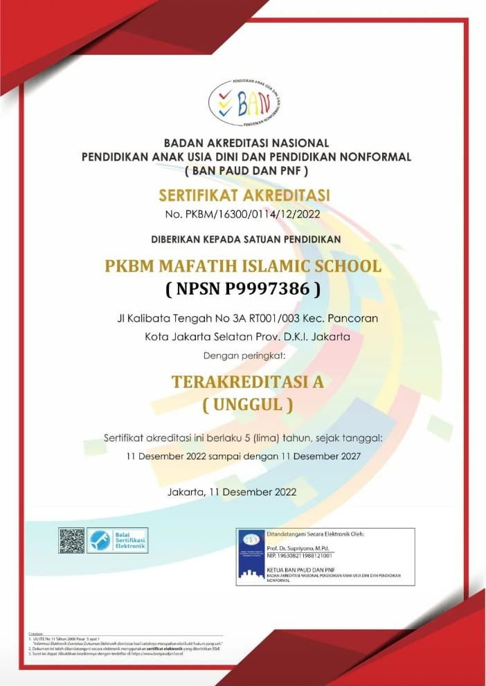

Mafatih Islamic School Meraih Akreditasi A Tahun 2022
Mafatih Islamic School has been awarded with Level A national accreditation in 2022. Mafatih Islamic School meraih akreditasi A pada tahun 2022 — pengakuan resmi atas standar mutu pendidikan, kurikulum, tenaga pendidik, dan tata kelola sekolah.